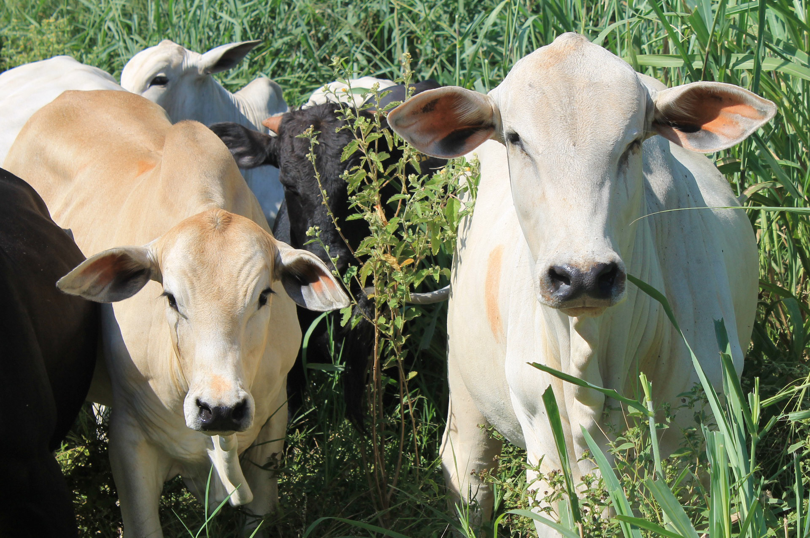

A pecuária é uma das atividades que mais movimentam a economia no Brasil. Ela gera empregos, fornece alimentos e é essencial para as exportações. Muitos produtos que chegam aos mercados das cidades começam no campo, com o trabalho dos produtores rurais.
Com o avanço da tecnologia e das técnicas de manejo, a pecuária se tornou mais eficiente e produtiva. Isso mostra como o campo e a cidade estão ligados: o crescimento de um depende do outro.
